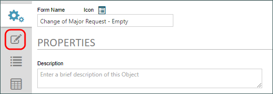
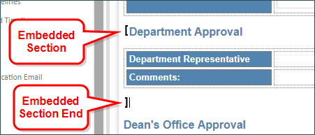
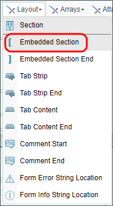
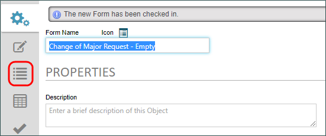
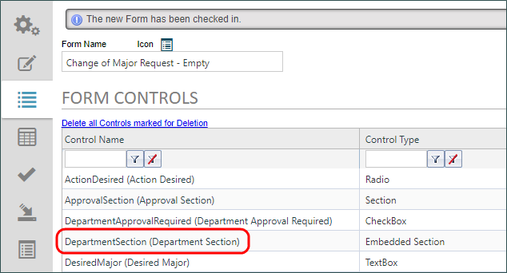
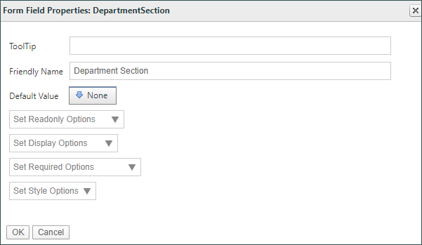
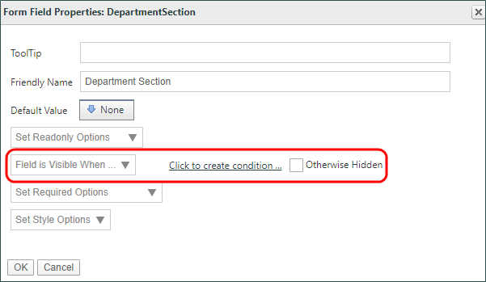
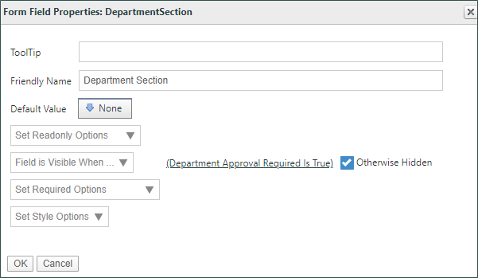
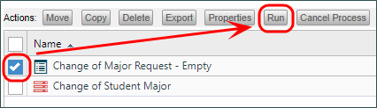
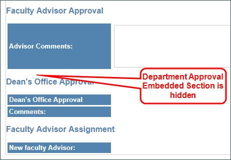

|
|
Lesson Contents | In this Lesson, we will discuss how to apply Business Rules in an application's Form. |
Just as we can apply a Business Rule to a Process Timeline, we can use the same business rule to govern how our Form works. Open the form definition for the Change of Major Request Form by clicking on the Form’s name in the Content List. Once the Form Definition opens, click the Edit tab to open the Online Form Designer.

In the exercise for Lesson 1 of Module 2, we added a Heading for Department Approval. Below that, we placed a User Picker and an Input control in a table to collect the information we need to collect in the Department Approval Activity. Of course, if the Activity doesn’t run, we don’t want to display it on the form during the approval process. We want to hide this area by using the same business rule we used in the Timeline Activity.
To hide this area, we need to add a control called an Embedded Section to our Form. The Embedded Section control enables us to configure a hidden section on the form that we can use to show or hide information on a form. The Embedded Section requires us to use both an Embedded Section control at the start of the section, and an Embedded Section End control at the end of the section.

Using your mouse, place the flashing cursor to the immediate left of the text that says “Department Approval”. Once you have placed the cursor, we can add the start of our embedded section by selecting Embedded Section from the Layout controls menu.

When the Properties dialog box for the control opens, name the control “DepartmentSection”, then click the OK button to close the dialog box. The section control will appear on the form as a black, square, left bracket.
Now, let’s click on the empty line immediately below the table that contains the controls for Department approval to place our cursor on the empty line. Once we’ve done so, we can choose Embedded Section End from the Layout controls menu. When you do, the control will automatically be placed at the cursor location. There is no configuration you need to do for this control. The control will simply display as a black, square, right bracket.
All of the content between the square brackets is now in its own embedded section. We’ve edited the form page, so now, we can save and close the Online Form Designer to return to the Form Definition.
In the form definition, click on the Form Controls tab to open the control configuration page.

Every control that you place on a form will be listed on the Form Controls tab. As you can see, we now have a section control listed on this page for our new DepartmentSection.

We can open the properties for this control by clicking on the Control Name for it.

Just as every control has control properties in the Online Form Designer, the Form Controls tab gives us access to another set of properties. Again, different controls will have different properties. But, most controls will share a couple of important properties, such as how to enable or hide controls, or to make a control required. In our case, we want to show this section only if our Business Rule returns true.
From the Set Display Options dropdown, select the option labeled “Field is Visible when…”. Once you do so, a link to the condition builder will appear, along with a check box labeled “Otherwise Hidden”.

We can now repeat the same condition for this property that we used in the Department Approval Timelne Activity. Click the link to open the Condition Builder. Next, click the Add Condition button to add the condition. Use the builds button to open the Choose System Variable Dialog box, then navigate to the Department Approval Required Business Rule in the Dropdown menu to select it. Click OK to close the dialog box, and our condition should display the "Is True" operator. Click the OK button to close the Condition Builder, and our condition should now be properly displayed. All we need to do now is click the Otherwise Hidden check box.

Our properties are now configured correctly, so click the OK button to save and close the Properties dialog box. Next, save and close the form definition by clicking the OK menu button at the top right corner of the screen.
Let’s check our work by running the form from the Content List, and walking through the process. Click the check box next to the form name in the content list, then click the Run button to start the form instance.

When the form opens, we can fill it out, ensuring that we add our name as the Faculty Advisor, and that we do not check the Department Approval Required check box. Once we’ve filled out the form, we can click the Submit button. Since we have the first task assignment the form will reload to display the approval section. Notice that, if we scroll down on the form, the Department Approval section is now hidden.

We can now simply click the result buttons at the bottom of the form to complete our process and close the form.